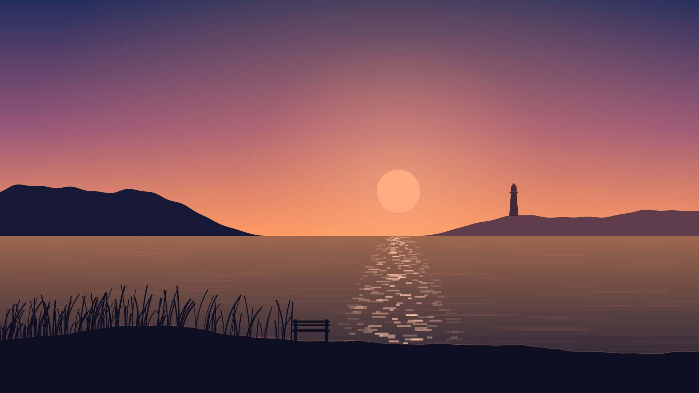
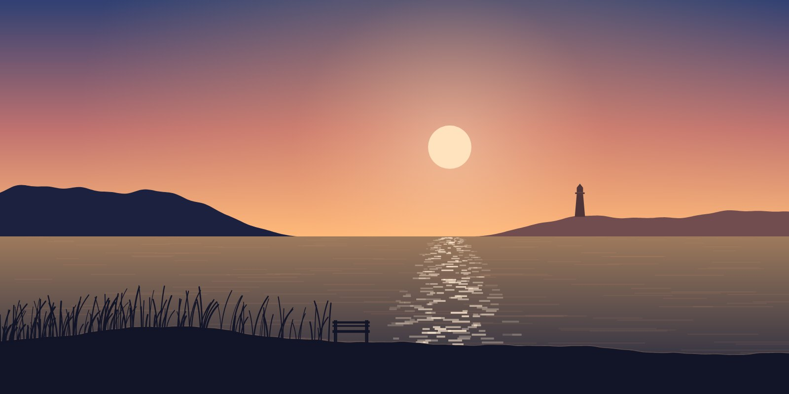
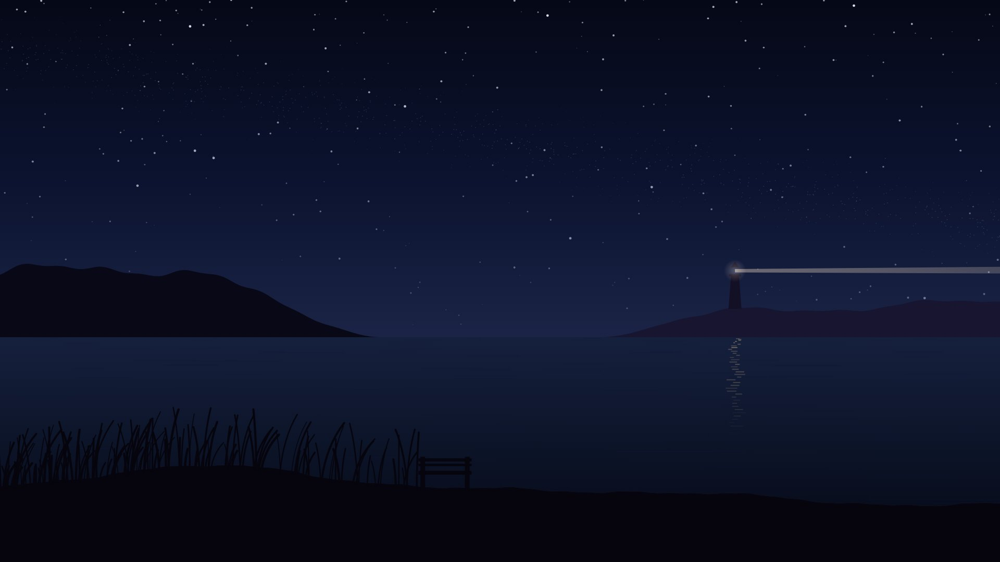

EXT. COAST PATH – EARLY EVENING
The path to the bay starts behind the last house on the lane. It runs between two hedges, drops through a gap in the dunes and ends at a bench that faces west.
Nobody sits there in winter. In summer it’s the best seat in town for about forty minutes a day, from when the sun touches the far headland until the lighthouse comes on.
You can already hear the sea from here, faintly, under these words. Keep scrolling and the picture will open up around you.

From the bench you can see the whole bay. The water is flat and the light is turning orange.
data-enter="grow" The picture opened out from the page as it scrolled in.
Scroll slowly and the view drifts closer. Scroll back and it eases away again.
data-zoom The zoom follows your scroll position, not a timer.
Down on the sand the sea is much louder. The waves arrive in pairs: two breakers, then a pause.
data-sound The surf rises as the picture changes. With sound off, nothing plays.
Here the sea drops back so the words can sit on top of it.
data-volume="0.35" Each step can set its own level.
Keep going. The picture folds back into the page and the sound goes with it.
Volume follows how much of the picture is on screen.
EXT. TIDE LINE – CONTINUOUS
At low tide the bay empties into a wide shelf of wet sand. Each wave runs up a little less far than the one before, and leaves a line of foam to mark where it stopped.
Behind you are the dunes, the bench and the town. Out in front, the sun is close to the water now.

You can watch it set at whatever speed you like.
This is a time-lapse, and you’re holding the clock. Scroll down and the sun goes down.
data-scrub Your scroll position sets the video’s playhead.
Scroll back up and it rises again. Every frame belongs to a place on the page.
As the sky turns blue, the lighthouse comes on and some music comes in underneath.
data-audio="night:0.5" A separate audio track with no picture of its own.
By the time the last of the colour has gone, the stars are out.
EXT. BEACH – NIGHT
Further along the beach, someone has lit a fire. You can hear it before you can see it: the snap of driftwood, and under that a low roar.
This paragraph is plain text with a sound attached. The crackle belongs to the next scene. It’s already playing, just quietly.

Three people are sitting around it, and a fourth has gone to look for more wood.
Same sound as the paragraph above, now with its picture. Nothing restarts.
Someone has brought a flask of tea. Someone else has brought the wrong kind of cups.
data-volume="0.4"
Walk twenty paces away from the fire and look up. Once your eyes adjust there are far more stars than you expected.
data-audio="night:0.9, fire:0.12" The music swells and the fire stays faintly behind you.
The tide has turned. In a few hours the bay will be full again.
FADE OUT.
That’s the whole story. Everything you saw and heard was set by how far down the page you were. Nothing played on a timer, and nothing made a sound until you asked it to.
How it’s put together
The page is ordinary HTML. Each scene is a section holding a pinned stage of pictures and videos, followed by the text steps that scroll over it. A small script with no dependencies watches the scroll position and decides what to show, what to play and how loud.
| Attribute | Goes on | What it does |
|---|---|---|
class="scrolly" | section | Pins a full-screen stage while its steps scroll over it. |
data-layer="dusk" | layer, step | Names a picture or video, and picks which one a step shows. |
data-sound | video, audio | Lets the media be heard once the reader turns sound on. |
data-volume="0.4" | step, inline video | Sets the level for that step, from 0 to 1. |
data-audio="night:0.5" | section, step, any text block | Plays other sound sources by id, at the given level, while it’s on screen. |
data-zoom | image or video in a layer | Pushes in slowly as you scroll. --zoom sets how far. |
data-scrub | video in a layer | Ties the video’s playhead to scroll position. |
data-inline | video in the text | Plays while on screen. With data-sound, its volume follows how much is visible. |
data-enter="grow" | section | Opens the stage from a framed picture to full screen, and closes it on the way out. |
data-align="right" | step | Moves the text card to the right or centre. |
data-caption="…" | audio | Caption shown while it’s audible. Videos use a <track> file instead. |
All the pictures and sounds here were generated in code for this demo. To use real footage, swap the src attributes for your own files.